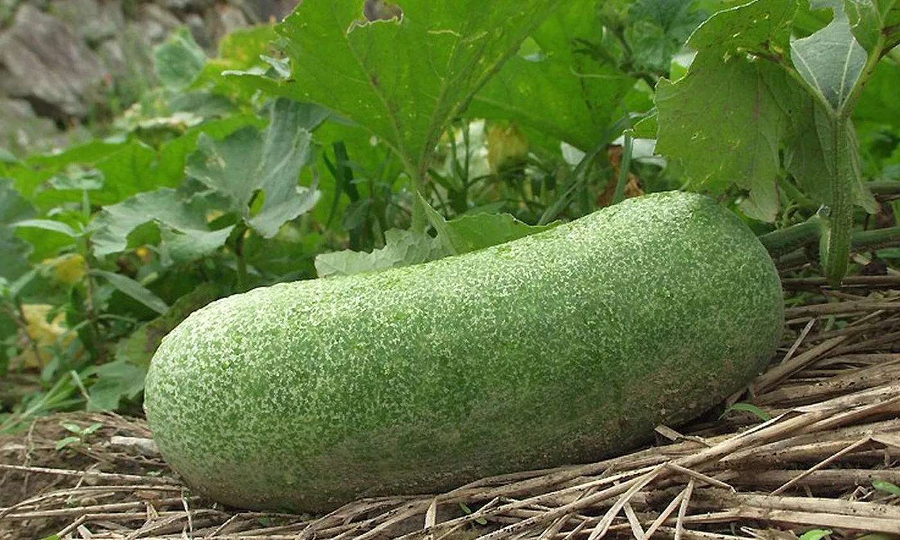

চারাগুলো রোপনের আগের দিন বিকালে পানি দিয়ে
মাটি ভালোভাবে ভিজিয়ে দিতে হবে। পরের দিন
বিকালে চারা রোপন করতে হবে। মাদাগুলোর মাটি
ভালোভাবে ওলট-পালট করে, এক কোপ দিয়ে চারা
লাগানোর জন্য জায়গা করে নিতে হবে। চারার
পলিব্যাগের ভাঁজ বরাবর ব্লেড দিয়ে কেটে পলিব্যাগ
সরিয়ে মাটির দলাসহ চারাটি নির্দিষ্ট জায়গায় লাগিয়ে
চারপাশে মাটি দিয়ে ভরাট করে দিতে হবে। চারা
লাগানোর পর গর্তে পানি দিতে হবে। পলিব্যাগ
সরানোর সময় এবং চারা রোপনের সময় সাবধানে
থাকতে হবে যাতে মাটির দলা ভেঙ্গে চারার শিকড়
ক্ষতিগ্রস্থ না হয়। নতুবা শিকড়ের ক্ষতস্থান দিয়ে
ঢলে পড়া রোগের জীবানু ঢুকবে এবং শিকড়
ক্ষতিগ্রস্থ হলে গাছের বৃদ্ধি দেরীতে শুরু হবে।